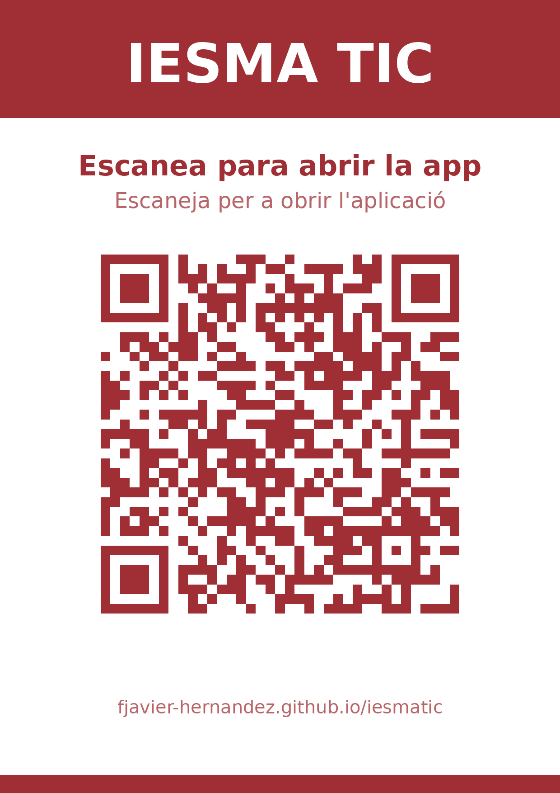
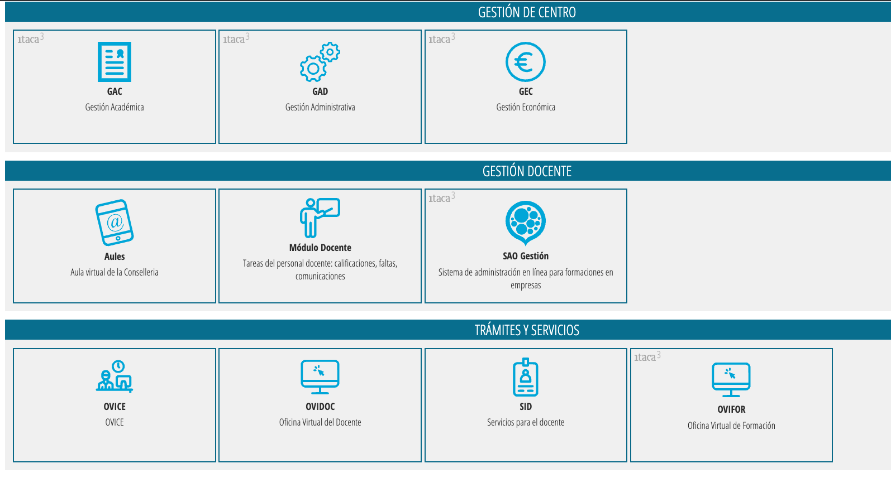

Herramientas corporativas 26-27¶
Presentación¶
El seminario de centro «Herramientas corporativas 26-27» está dirigido al profesorado del Instituto de Educación Secundaria (IES) Macià Abela. A lo largo de veinte horas se trabajan las herramientas corporativas de la Conselleria de Educación y la competencia digital docente (CDD): los servicios con los que el centro se comunica, organiza la docencia y custodia la información del alumnado.
Material de referencia del seminario
Este Sway de Conselleria recoge todas las plataformas que usa el profesorado, y cada sesión del seminario desarrolla una parte adaptada al centro.
El seminario forma parte de la coordinación de Tecnologías de la Información y la Comunicación (TIC) del centro. Dentro del programa, la sesión presencial IESMA TIC I trata IESMA TIC, la aplicación del propio centro, que reúne sus recursos y procedimientos TIC. El profesorado la consulta cuando necesita uno de esos recursos en el trabajo diario. La intención del seminario es que use con soltura la identidad digital y el resto de servicios corporativos.

Organización y calendario¶
El seminario son veinte sesiones. Nueve son presenciales y se cursan en el aula SMR2, de 14:00 a 15:00. Las otras once son de trabajo en casa. Entre una sesión presencial y la siguiente, ese trabajo sirve para repasar, para probar en la propia cuenta lo visto en el aula y para llegar con la práctica hecha.
Abrir un tique se hace en gvaSAI, la aplicación del Soporte y Asistencia Informática. La columna Material del calendario indica si los apuntes de esa sesión ya pueden consultarse.
| N.º | Fecha | Modalidad | Tema | Material |
|---|---|---|---|---|
| 1 | 5/11/26 | Presencial | Presentación. Identidad digital: contraseña, recuperación, doble factor (MFA) y correo corporativo | Disponible |
| 2 | 12/11/26 | En casa | ITACA3 más allá del módulo docente | Disponible |
| 3 | 19/11/26 | Presencial | IESMA TIC I: presentación, Incidencias TIC (y cuándo abrir un tique en gvaSAI) y REDAR. OneDrive | Próximamente |
| 4 | 3/12/26 | En casa | IESMA TIC II: VATERLOO y PARTENON | Próximamente |
| 5 | 10/12/26 | En casa | OneDrive y SharePoint: guardar y compartir | Próximamente |
| 6 | 17/12/26 | Presencial | Aules I: crear el aula y organizar el curso | Próximamente |
| 7 | 7/1/27 | En casa | Aules II: recursos e integración con OneDrive | Próximamente |
| 8 | 14/1/27 | Presencial | Aules III: tareas y entregas | Próximamente |
| 9 | 21/1/27 | En casa | Aules IV: cuestionarios | Próximamente |
| 10 | 4/2/27 | Presencial | Aules V: calificaciones y rúbricas | Próximamente |
| 11 | 11/2/27 | Presencial | Teams I: crear los equipos de clase desde ITACA | Próximamente |
| 12 | 18/2/27 | En casa | Teams II: publicaciones, chat y reuniones | Próximamente |
| 13 | 4/3/27 | Presencial | Teams III: Videoconferencias: reuniones en Teams paso a paso | Próximamente |
| 14 | 11/3/27 | En casa | Teams IV: Teams para la gestión del centro (Claustre, departamentos y calendarios compartidos) | Próximamente |
| 15 | 8/4/27 | Presencial | Accesibilidad: documentos y materiales inclusivos | Próximamente |
| 16 | 15/4/27 | En casa | Competencia digital del alumnado: seguridad y buen uso | Próximamente |
| 17 | 22/4/27 | En casa | Appsedu: apps autorizadas y protección de datos | Próximamente |
| 18 | 6/5/27 | En casa | OVIDOC y otras plataformas de Conselleria | Próximamente |
| 19 | 13/5/27 | En casa | Taller: preparar el producto final | Próximamente |
| 20 | 20/5/27 | Presencial | Puesta en común y cierre | Próximamente |
Si una sesión presencial no pudiera celebrarse, las fechas de reserva para recuperarla son el 3, el 10 y el 17 de junio de 2027.
Metodología y forma de trabajo¶
En las sesiones presenciales se trabaja el tema con la cuenta corporativa abierta y se resuelven en directo las dudas de la tarea anterior. En las sesiones en casa, cada uno sigue los apuntes a su ritmo y hace una tarea breve que se entrega en el curso de Aules Docent del seminario. Las dudas se plantean en el foro del curso, para que todo el grupo pueda aprovechar las respuestas, o de forma privada en Dudas Individuales. La organización de cada sesión puede ajustarse según cómo avance el grupo.
Evaluación y asistencia¶
Para completar el seminario se necesita un 85 % de asistencia. La asistencia se registra firmando el acta de cada sesión presencial. Esa firma es el registro que se conserva, así que conviene firmar durante la propia sesión.
Ese porcentaje se refiere a las sesiones presenciales, que son las que quedan recogidas en el acta. El trabajo de casa se entrega en el curso de Aules Docent del seminario.
Sesiones
Sesión 1. Presentación e identidad digital¶
La identidad digital es la cuenta corporativa con la que el profesorado entra en los servicios de la Conselleria. Esa cuenta se sostiene en una contraseña que no se comparte y en una autenticación multifactor que añade una segunda comprobación. El correo asociado es el cauce formal del centro, y de su uso dependen los avisos al claustro, las listas y los buzones compartidos. Revisar estas tres piezas en la propia cuenta evita bloqueos y usos que la normativa no admite.
Punto de partida de la sesión
Los manuales de la identidad digital reúnen la contraseña, la autenticación multifactor, el correo, las listas y los buzones. El Sway Plataformes TIC per al personal docent recorre las plataformas del profesorado.
La contraseña¶
En este apartado
- La contraseña forma parte de la identidad digital y no se comparte, ni siquiera cuando la petición llega con urgencia o desde una dirección que parece de confianza.
- Cuando varias personas tienen que atender un mismo buzón, lo que corresponde es un buzón compartido, y no la cesión de la clave de nadie.
- El cambio se hace en el autoservicio oficial, con una clave nueva que no se reutiliza en otros servicios y que no pueda adivinarse a partir del nombre o del centro.
-
Si se olvida, se recupera con el formulario oficial, porque la clave no se envía por correo ni por un chat.
- Guía del seminario sobre el cambio y la recuperación de la contraseña
- Autoservicio de cambio de contraseña
- Formulario de recuperación de la contraseña
- Plataformes TIC per al personal docent
Leer más
La contraseña forma parte de la identidad digital y es personal. No se comparte con compañeros, con el alumnado ni con personas ajenas al centro, aunque la petición llegue con urgencia o desde una dirección que parece de confianza. Quien conoce la clave puede leer el correo y actuar con esa cuenta. Cuando varias personas tienen que atender un mismo buzón, lo que corresponde es un buzón compartido, y no la cesión de la contraseña de nadie.
El cambio se hace en el autoservicio oficial, con la identidad digital y la contraseña actual. La clave nueva no debe reutilizarse en otros servicios ni poder adivinarse a partir del nombre o del centro. Conviene cambiarla al empezar a usar la cuenta y volver a cambiarla si se sospecha que alguien más la conoce. Si se ha olvidado, el formulario de recuperación pide unos datos de comprobación antes de permitir una clave nueva. La recuperación no se resuelve enviando la clave por correo ni por un chat.
La autenticación multifactor¶
En este apartado
- La autenticación multifactor (MFA) añade una segunda comprobación a la contraseña, como un aviso en el móvil o un código de un solo uso.
- El doble factor del correo y de Microsoft 365 y el de ITACA, el sistema de información de la gestión educativa, son independientes, así que conviene dejar configurados los dos.
- La llamada y el mensaje de texto (SMS) se retiran el 1 de febrero de 2027, de modo que hace falta al menos otro método, como una aplicación de autenticación, KeePassXC o una extensión del navegador.
- Esos métodos se gestionan en la información de seguridad de la cuenta, y el alta no puede hacerse desde el extranjero.
-
Si se cambia de móvil y queda otro método, se da de baja el aparato antiguo y se registra el nuevo; si se pierde el único, el acceso se restablece con una incidencia en el Soporte y Asistencia Informática (SAI).
- Información de seguridad de la cuenta
- Guía del seminario sobre la autenticación multifactor
- Plataformes TIC per al personal docent
Leer más
La autenticación multifactor (MFA) es una segunda comprobación, además de la contraseña. El servicio pide algo que solo tiene la persona titular en ese momento, como una confirmación en el móvil o un código de un solo uso. Aunque otra persona llegue a conocer la contraseña, no entra en la cuenta si no supera esa prueba.
Según la guía oficial de autenticación multifactor, el doble factor del correo y de Microsoft 365 y el de ITACA, el sistema de información de la gestión educativa, son totalmente independientes: configurar uno no configura el otro. En la aplicación Authenticator se distinguen con claridad. El de Microsoft 365 aparece con el correo corporativo y el nombre «Conselleria d'Educación», y se autoriza con una notificación en el móvil. El de ITACA aparece como «GVA Educación» y funciona con un código de verificación. Conviene revisar los dos, porque dejar configurado solo uno deja el otro pendiente.
Los métodos se gestionan en la información de seguridad de la cuenta, y la guía oficial indica que el alta no puede hacerse desde el extranjero. La llamada y el mensaje de texto se retiran el 1 de febrero de 2027, así que hace falta otro método de los que el servicio mantiene, como una aplicación de autenticación, KeePassXC o una extensión del navegador.
Si se cambia de móvil y todavía queda otro método, se entra con él, se da de baja el aparato antiguo y se registra el nuevo desde ese mismo apartado. Si se ha perdido el único método y no hay forma de entrar, no se usa la contraseña ni el código de otra persona: se abre una incidencia en el SAI para restablecer el acceso.
El buen uso del correo¶
En este apartado
- El correo de la identidad digital es el cauce formal del centro, y conviene leer la dirección completa del remitente, porque un mensaje de suplantación suele apurar, usar un saludo genérico o disfrazar un enlace.
- Cuando el correo va dirigido al claustro, se responde a la persona concreta, y se responde a todos solo si la respuesta corrige un dato que el grupo entero va a usar.
- La copia oculta (CCO) sirve para un aviso puntual en el que no hace falta mostrar las direcciones; si ese envío se repite, lo adecuado es una lista de distribución del centro.
- Las listas de contactos de Outlook son personales, las listas de distribución son corporativas y los buzones compartidos permiten que varias personas lean y respondan desde una dirección común.
-
El chat de Teams cubre la consulta breve dentro del equipo, mientras que el correo sigue siendo preferible cuando el mensaje debe poder releerse, va dirigido a alguien de fuera o deja constancia de un envío amplio.
- «Listas de contactos y grupo de correo del claustro»
- «Correo del claustro con varios buzones»
- «Buzones compartidos: gestión y uso»
- Plataformes TIC per al personal docent
Leer más
El correo de la identidad digital es el cauce formal del centro. Usarlo con criterio evita que un aviso se pierda entre respuestas, que se expongan direcciones que no hacía falta mostrar y que un mensaje falso consiga un clic.
Cuando llega un correo dirigido al claustro, responder a todos suele estorbar más de lo que ayuda. Una aclaración que solo necesita quien escribió, un acuse de recibo o un comentario que no cambia lo que el resto tiene que hacer se multiplica por todo el profesorado y tapa el mensaje original. Se responde a la persona concreta. Se responde a todos solo cuando la respuesta interesa al grupo entero, por ejemplo porque corrige un dato, una fecha o un lugar que los demás van a usar.
La copia oculta (CCO) tiene otro uso. Sirve cuando un mismo aviso debe llegar a varias personas y no hay motivo para que cada una vea las direcciones de las demás, como en un envío a un grupo que no comparte buzón. No es la herramienta habitual para escribir al claustro. Si ese envío se repite, lo adecuado es una lista de distribución mantenida por el centro: un CCO preparado a mano cada vez se queda desactualizado, y es fácil olvidar a alguien o añadir a quien no correspondía.
Conviene distinguir tres recursos que se parecen en el nombre y no en la función. Las listas de contactos de Outlook en la web las crea cada docente a mano en su propio buzón, para agrupar a las personas con las que escribe a menudo; son personales, el resto del centro no las ve y no se actualizan solas, como explica la ayuda de Microsoft para crear, editar o eliminar una lista de contactos. El grupo Claustro aparece en Outlook y sus miembros se actualizan solos desde ITACA, según la pregunta frecuente sobre el envío al claustro y la guía «Correo del claustro con varios buzones».
La dirección de ese grupo se puede guardar como contacto. Un docente no puede crear grupos nuevos, como indica la guía «Listas de contactos y grupo de correo del claustro». Los buzones compartidos son una tercera pieza: una dirección común que varias personas pueden leer, y desde la que pueden responder. Resultan útiles para el equipo directivo, porque el mensaje llega al cargo y no a la cuenta personal de quien lo ocupa en ese momento.
Un correo de suplantación de identidad, también llamado phishing, imita a un remitente de confianza para obtener una contraseña, un dato o un clic. Suele apurar a actuar enseguida, usa un saludo genérico, incluye un enlace que casi coincide con una dirección conocida o adjunta un archivo que no se esperaba. Hay que leer la dirección del remitente completa, y no solo el nombre que se muestra delante. Una petición de contraseña por correo es, por sí misma, motivo para no contestar y para tratar el mensaje como sospechoso. Ante la duda, no se abre el enlace ni se responde al mensaje: se pregunta por el chat del centro o por un canal ya conocido y, si cabe la posibilidad de que la cuenta se haya visto comprometida, se cambia la contraseña y se comunica al SAI.
El chat de Teams es mejor que un correo cuando la consulta es breve, va dirigida a quien ya está en ese equipo y no necesita quedar como comunicación formal. Es el caso de una duda breve entre compañeros, de un aviso de que un documento ya está revisado o de una pregunta que se resuelve en pocas frases. El correo sigue siendo preferible cuando el mensaje debe poder releerse más adelante, cuando va dirigido a alguien que no está en el equipo o cuando conviene dejar constancia de un envío a muchas personas.
Foto de perfil en MS365¶
En este apartado
- La foto de perfil de Microsoft 365 permite que el resto del claustro reconozca a quien escribe en Outlook, en Teams y en los chats.
- Con la cuenta @edu.gva.es puede cambiarse desde Outlook en la web o desde Mi cuenta, y las dos vías guardan la misma imagen.
-
El archivo tiene que ser PNG, JPG o GIF y ocupar menos de 4 MB. Después de guardarla, puede tardar hasta 24 horas en verse en todas las aplicaciones.
-
Agregar o actualizar la imagen de perfil profesional o educativa
- Mi cuenta
Leer más
La foto de perfil acompaña a la cuenta en Outlook, en Teams y en los chats. Quien recibe un mensaje o entra en una conversación ve esa imagen junto al nombre, y así el claustro reconoce a la persona sin depender solo de la dirección de correo. Conviene que el retrato sea reciente y que se vea la cara, porque esa es la imagen con la que el resto del centro va a identificar la cuenta.
Desde Outlook en la web, el cambio se hace con la cuenta @edu.gva.es.
- Pulsa la foto o las iniciales de arriba a la derecha.
- Elige «Ver cuenta».
- Elige «Cambiar foto».
- En «Cargar una foto nueva», selecciona la imagen.
- Confirma con «Aplicar».
La misma foto puede cargarse desde Mi cuenta, si resulta más cómodo hacerlo fuera del buzón. Hay que entrar con la identidad digital.
- Pulsa el icono «Editar» que aparece sobre la foto.
- Carga la imagen.
- Pulsa «Guardar».
El archivo tiene que ser PNG, JPG o GIF y ocupar menos de 4 MB. Una vez guardada, la imagen puede tardar hasta 24 horas en mostrarse en todas las aplicaciones, de modo que en Outlook puede verse ya la foto mientras Teams o un chat siguen mostrando las iniciales. No hace falta volver a cargarla en cada aplicación, porque las dos vías escriben la foto de la misma cuenta.
¿Por qué usar la identidad digital?¶
En este apartado
- La identidad digital es la cuenta corporativa (@edu.gva.es) con la que el profesorado, el personal no docente y el alumnado entran en el correo, en Microsoft 365, en Teams, en OneDrive, en Aules, en ITACA y en el resto de servicios del centro.
- Las instrucciones de inicio de curso piden usar las herramientas de la Conselleria, y ese mismo criterio alcanza al profesorado de Formación Profesional.
- La cuenta es personal, queda reservada a la docencia y a la administración educativa, y sin la autenticación multifactor no puede usarse fuera de la red corporativa.
-
Trabajar con ella es la forma de proteger los datos del alumnado y de usar los medios que el centro tiene dispuestos.
- Portal de Identitat Digital
- Uso de la cuenta fuera de la red corporativa
Leer más
La identidad digital de la Generalitat Valenciana es la cuenta corporativa (@edu.gva.es) con la que el profesorado, el personal no docente y el alumnado acceden a las herramientas oficiales: el correo Outlook, Microsoft 365, Teams, OneDrive, Aules, ITACA y el resto de servicios del Centro Digital Colaborativo. No es un detalle técnico menor. Las instrucciones de organización y funcionamiento de los centros de Educación Secundaria Obligatoria y Bachillerato para el curso 2026-2027 establecen, en el apartado 11.1.2, que «como norma general, deberán emplearse las herramientas que la conselleria competente en materia de educación ponga a disposición de los centros», entre ellas la Identidad Digital, ITACA, Aules y las herramientas colaborativas. En ese mismo apartado se prohíbe transmitir o alojar información propia de la Administración en sistemas externos en la nube sin autorización expresa tras un análisis de riesgos.
Esto vale también para el profesorado de Formación Profesional. Las instrucciones de Formación Profesional para el curso 2026-2027 (Resolución de 16 de julio de 2026, DOGV núm. 10408, de 20 de julio de 2026) no tienen un apartado propio sobre herramientas corporativas ni sobre identidad digital. Sin embargo, su apartado 1, dedicado al ámbito de aplicación, establece que en las cuestiones que no contemplan se aplica lo dispuesto en las instrucciones de Educación Secundaria Obligatoria y Bachillerato del mismo curso. Por tanto, los criterios sobre el uso de las herramientas de la Conselleria, la identidad digital y la protección de datos que recogen los apartados 11.1.2, 11.1.2.3 y 11.1.4 de aquellas se aplican igualmente a todo el claustro.
Hay, además, una razón práctica de seguridad. La Instrucción de servicio 4/2025 regula el uso de esa identidad digital y deja claro que la cuenta solo puede emplearse para docencia y administración educativa, nunca para fines personales ni empresariales, y que es estrictamente personal: no se comparte con terceros. El portal de Identitat Digital exige, además, configurar la autenticación multifactor (MFA, el «doble factor»): si no está activa, no se puede usar la cuenta desde fuera de la red corporativa, tampoco desde un dispositivo personal. Esa medida reduce el riesgo de que alguien suplante la identidad de un docente y acceda a datos del alumnado o del centro.
El marco legal de protección de datos apunta en la misma dirección. El Reglamento general de protección de datos (RGPD), en el artículo 5.1.f, obliga a tratar los datos con integridad y confidencialidad, y el artículo 32 exige medidas técnicas y organizativas adecuadas al riesgo. La disposición adicional vigesimotercera de la Ley Orgánica 2/2006, de Educación (LOE), recuerda que en el tratamiento de los datos del alumnado deben aplicarse normas que garanticen su seguridad y confidencialidad, y que el profesorado queda sujeto al deber de sigilo. Por su parte, el artículo 83 de la Ley Orgánica 3/2018, de Protección de Datos Personales y garantía de los derechos digitales (LOPDGDD), reconoce el derecho a una educación digital segura y respetuosa con la intimidad y la protección de datos, y pide que el profesorado reciba la formación digital necesaria. El Esquema Nacional de Seguridad (ENS, Real Decreto 311/2022) se aplica a todo el sector público, incluida la Administración educativa, y la propia Conselleria trabaja su adecuación desde Ciberseguretat edu.
Por último, la Agencia Española de Protección de Datos (AEPD) desaconseja tratar datos del alumnado con cuentas o aplicaciones personales. En sus criterios para centros educativos indica que el profesorado debe usar únicamente las plataformas que haya dispuesto el responsable del tratamiento, y que las comunicaciones con las familias deben hacerse por los medios corporativos, habitualmente la plataforma educativa o el correo del centro. En el informe sobre aplicaciones que almacenan datos en la nube ajenas a las plataformas educativas, recomienda primar la plataforma del centro y no crear canales paralelos. Usar la identidad digital corporativa, con su contraseña y el MFA, no es solo una costumbre cómoda: es la forma de cumplir las instrucciones de inicio de curso, de proteger los datos del alumnado y del claustro, y de trabajar con las herramientas que la Conselleria pone a disposición de los centros.
Lista de contactos y foto de perfil¶
En este apartado
- La tarea consiste en crear, en Outlook en la web, una lista de contactos con tres o cuatro compañeros o compañeras del centro, y en poner la foto de perfil en Microsoft 365.
- Microsoft llama también lista de distribución a esa lista personal. No es el grupo de correo del claustro, que el docente no puede crear, ni un buzón compartido.
-
La entrega, en el curso de Aules Docent del seminario, es una sola imagen en la que se vean la lista creada, con los correos difuminados, y la foto de perfil ya visible arriba a la derecha.
- «Listas de contactos y grupo de correo del claustro»
Leer más
- Entra en Outlook en la web con la identidad digital.
- En el panel lateral, abre Personas. La ayuda de Microsoft nombra esa entrada como People.
- Junto a «Nuevo contacto», abre el desplegable y elige «Nueva lista de contactos».
- Escribe un nombre para la lista y añade tres o cuatro compañeros o compañeras del centro, con su correo corporativo.
Agregar destinatarios
El campo «Agregar destinatarios» admite una sola dirección cada vez. Si se pegan varias a la vez, separadas por punto y coma o por comas, Outlook muestra el error «La lista de contactos debe tener al menos una dirección de contacto/correo electrónico» y no guarda ninguna. Cada dirección se escribe o se pega por separado y se confirma con «Agregar» o con Intro antes de pasar a la siguiente. El botón «Crear» solo se activa cuando hay al menos una dirección añadida.
- Pulsa «Crear».
- Pon la foto de perfil de Microsoft 365 con la cuenta @edu.gva.es, desde Outlook en la web o desde Mi cuenta.
- Haz una sola captura en la que se vean la lista creada y la foto de perfil arriba a la derecha, y difumina las direcciones de correo antes de guardarla.
- Entrega esa imagen en el curso de Aules Docent del seminario.
La lista de contactos es un grupo personal del propio buzón. El grupo de correo del claustro, en cambio, se actualiza desde ITACA y el docente no puede crearlo.
Sesión 2. ITACA3 más allá del módulo docente¶
ITACA3 es el sistema con el que el centro gestiona la información académica, el funcionamiento cotidiano y los trámites del personal docente. El escritorio abre un panel de tres bloques: gestión de centro, gestión docente y trámites y servicios. En el tercero están OVIDOC, la oficina del expediente y de la hoja de servicios, y OVIFOR, la oficina de la formación permanente. Distinguir cada bloque permite llegar al dato, al horario o a la inscripción que hace falta en el día a día.
Punto de partida de la sesión
El escritorio de ITACA3 reúne los accesos de gestión de centro, gestión docente y trámites y servicios. El portal y los manuales de ITACA describen el sistema, y el Sway Plataformes TIC per al personal docent recorre las plataformas del profesorado.

Gestión de centro¶
La gestión de centro agrupa la gestión académica, la administrativa y la económica. Con estos módulos trabajan la secretaría y el equipo directivo, porque reúnen la información del alumnado, el funcionamiento del centro y su actividad económica. No sustituyen a la pantalla con la que el profesorado pasa lista o pone calificaciones.
GAC¶
En este apartado
- La gestión académica (GAC) concentra la información académica del alumnado: la matrícula, la evaluación, la admisión, los certificados y el seguimiento.
-
Las actividades complementarias y extraescolares se revisan en este módulo, y solo pasan a OVIDOC cuando están en estado «Aprob. Memoria».
Leer más
El portal de ITACA describe la gestión académica como el conjunto de la información académica del alumnado. Entran ahí la matrícula, la evaluación, la admisión, los certificados y el seguimiento académico. Es trabajo de secretaría y del equipo directivo, y el índice del módulo reúne las guías de esas pantallas.
Las actividades complementarias y extraescolares se revisan en GAC. Solo cuando quedan en estado «Aprob. Memoria» pasan al apartado de formación de OVIDOC, en la sincronización nocturna. Si falta una actividad, hay que pedir a la dirección del centro en el que se hizo que revise ese estado.
GAD¶
En este apartado
- La gestión administrativa (GAD) organiza el funcionamiento del centro: el personal, las aulas, los horarios, los servicios, las becas, las comunicaciones y la gestión cotidiana.
- La edición de horarios por docente y por grupo, y el calendario de festivos del centro, son gestión administrativa, distinta del horario de clase del módulo docente.
-
El Programa de Actividades Formativas (PAF) es la formación de centro que se tramita en ITACA3. La dirección graba a la coordinación, la secretaría valida y la dirección presenta.
- Manual de horarios de ITACA3-GAD
- Manual del calendario del centro
- Manual de personal de ITACA3-GAD
- Programa anual de formación
- Manual de la fase de desarrollo del PAF 2024-2025
Leer más
El horario como documento de gestión del centro se edita en GAD, por docente y por grupo, con plantillas y con la importación y la exportación que publica el índice del módulo. Esa edición no es la consulta del horario de clase, que está en el módulo docente. Desde la vista de clase no corresponde crear ni importar plantillas.
El calendario del centro también está en la gestión administrativa. Refleja los festivos introducidos por ordenación académica o por personal, y el centro puede añadir los festivos locales. La guía detalla el alta y la baja de esos días para quien tiene esa gestión. Ese calendario no sustituye al horario de sesiones del módulo docente, y la familia consulta los horarios semanales de las clases en la Web Familia.
El manual de personal indica que los datos identificativos vienen del registro de personal y que en la ficha tienen carácter informativo. El listado de personal del centro muestra la ficha de otras personas. La consulta que cada docente hace de sus propios datos está en OVIDOC, no en ese listado.
El PAF es el programa anual de formación permanente de centro. Para el curso 2026-2027, la dirección graba a la persona coordinadora de formación, esa coordinación y quienes coordinan cada actividad preparan el programa, la secretaría valida y la dirección presenta. El circuito del centro está en la página de ese curso.
Quien participa en una actividad recibe un aviso en el correo de su perfil de ITACA para entrar en OVIDOC y aceptar o rechazar la participación. Si el aviso no llega, el manual de la fase de desarrollo 2024-2025, dirigido a la coordinación de la actividad, indica entrar directamente en OVIDOC.
GEC¶
En este apartado
- La gestión económica (GEC) administra la actividad económica del centro: la contabilidad, las tasas, la facturación y el control de recursos.
-
La usan la secretaría y el equipo directivo. No hace falta abrirla para pasar lista, poner calificaciones o consultar el expediente propio.
Leer más
El portal de ITACA resume la gestión económica en la contabilidad, las tasas, la facturación y el control de recursos. El índice del módulo reúne las guías de esas pantallas. Quien no lleva la economía del centro resuelve su trabajo docente en el módulo docente y sus datos propios en OVIDOC.
Gestión docente¶
La gestión docente agrupa el aula virtual, las tareas de la clase y el seguimiento de la formación en empresa. Desde este bloque se abre Aules, el módulo docente y SAÓ Gestión.
Aules¶
En este apartado
- Aules es el aula virtual de la Conselleria.
-
El profesorado la usa para las aulas virtuales del centro.
Leer más
Aules es la plataforma educativa en línea de la Conselleria. El profesorado entra en ella para las aulas virtuales del centro. El portal de Aules explica cómo se accede a la plataforma y cómo se organizan esas aulas.
Módulo docente¶
En este apartado
- El módulo docente reúne las tareas del personal docente: calificaciones, faltas y comunicaciones.
- El horario de sesiones con el que se trabaja la clase está dentro de este módulo, junto con la información del centro y el dietario.
- La Web Familia muestra a las familias las calificaciones, las faltas, el calendario de evaluaciones, las actividades, los horarios semanales y las comunicaciones del docente y del centro.
-
Consultar el horario no exige modificar faltas ni calificaciones.
- Manual del módulo docente
- Qué es ITACA y la Web Familia 2.0
- Videotutorial del módulo docente
Leer más
El portal define el módulo docente como el espacio para pasar lista, poner notas y conectar con ITACA y con la Web Familia, desde el ordenador o desde otro dispositivo con conexión, sin instalar una aplicación. ITACA, Innovación Tecnológica Administrativa de Centros y Alumnado, es la plataforma modular de información centralizada que conecta al sistema educativo valenciano. Este módulo es la vista de la clase dentro de esa plataforma.
Quien busca su horario de clase lo encuentra en el manual del módulo, en el apartado de horario de sesiones, junto con la información del centro, las calificaciones y el dietario. Es la vista con la que se trabaja la clase del día. Lo que se graba aquí es lo que después ve la familia en la Web Familia.
La Web Familia no es un bloque de trabajo del profesorado. Es la web en la que las familias consultan calificaciones, faltas, calendario de evaluaciones, actividades y horarios semanales, además de las comunicaciones del docente y del centro. Los datos personales y profesionales del docente no están en esta vista: se consultan en OVIDOC, la Oficina Virtual del Docente.
SAÓ Gestión¶
En este apartado
- SAÓ Gestión es el sistema de administración en línea para las formaciones en empresas.
- Lo usa el profesorado tutor de la formación en empresa y quien coordina esa formación.
-
El acceso de ese profesorado se hace a través de ITACA.
Leer más
La página de Formación Profesional identifica el acceso del profesorado con el tutor y con quien coordina la formación en empresa, y lo distingue del acceso de la empresa y del alumnado. El del profesorado se realiza a través de ITACA.
Trámites y servicios¶
Trámites y servicios agrupa las oficinas del expediente docente, de la formación permanente y de otros servicios del panel. OVIDOC y OVIFOR son las que el profesorado usa para sus datos y para la oferta de formación de la Conselleria.
OVICE¶
En este apartado
- OVICE es el acceso que el panel de inicio muestra en trámites y servicios con el nombre OVICE.
Leer más
OVICE comparte el bloque de trámites y servicios con otras oficinas, y no es la consulta del expediente propio ni la de la formación permanente. El expediente se consulta en OVIDOC y la inscripción en la formación de la Conselleria se consulta en OVIFOR.
OVIDOC¶
En este apartado
- OVIDOC, la Oficina Virtual del Docente, es el acceso preferente al expediente docente electrónico normalizado (EDEN). Los datos personales y profesionales del docente se consultan aquí.
- El menú reúne información general, datos personales, historial administrativo, historial académico, formación, retribuciones y trámites, y puede variar según la relación con la Administración.
- En datos personales se consultan los datos propios, se pueden editar los de contacto y se consulta la identidad digital, que también puede comprobarse desde el escritorio de ITACA3.
- La formación de OVIDOC reúne la oferta de cursos y el historial formativo reconocido. Los sexenios y trienios ya reconocidos se consultan en el historial administrativo.
-
Los datos que muestra la oficina son del propio docente y no se copian fuera de ella.
- Portal de OVIDOC
- Menú principal de OVIDOC
- Consulta y gestión de los datos personales
- Cómo consultar el historial administrativo
- Cómo obtener la hoja de servicios oficial
- Cómo consultar la formación en OVIDOC
- Cómo acceder a la identidad digital
- Orden 5/2021, sobre EDEN y OVIDOC
Leer más
La Orden 5/2021, de 12 de febrero (DOGV núm. 9022, de 17 de febrero de 2021), regula el contenido, el uso y el acceso al expediente docente electrónico normalizado (EDEN). Su artículo 1 establece que OVIDOC es la plataforma de acceso preferente a ese expediente y a los trámites del ámbito de la orden. El artículo 3 define el expediente como el sistema que reúne los datos personales y administrativos del personal docente incluido en su ámbito, y el artículo 4 precisa que a cada persona le corresponde el suyo. La oficina se abre con la propia identidad digital y conviene consultar solo los datos propios.
El menú principal avisa de que los iconos dependen de la relación contractual, así que dos personas pueden no ver la misma pantalla. El historial administrativo incluye servicios, destinos, situación administrativa, órganos unipersonales y el reconocimiento de sexenios y trienios. El académico incluye capacitaciones, idiomas, títulos y otros datos del expediente.
Si es personal público, dentro del historial administrativo el botón «Descarga de Certificados» permite generar el certificado de «Hoja de servicios oficial». La guía indica que esa descarga no está disponible todavía para todos los colectivos.
Desde datos personales se consultan los datos y se editan los de contacto, para que la Administración disponga de un domicilio y de un teléfono actualizados. Si un dato de contacto propio está desactualizado, la guía pide corregirlo en la oficina, y esa corrección permanece allí. También se consulta y se gestiona la identidad digital, la cuenta de correo @edu.gva.es. La misma guía documenta la descarga del carnet docente para el personal público que cumple las condiciones que allí se indican. Quien sea docente de un centro concertado consulta con el equipo directivo algunos de esos datos, como la propia guía señala.
El profesorado puede comprobar la identidad digital desde el escritorio de ITACA3 y desde OVIDOC. La identidad del alumnado se consulta en el módulo docente. Las retribuciones aparecen en el menú de OVIDOC como consulta de la propia nómina y de los certificados que la guía enumera, y no se copian fuera de la oficina.
La guía de formación separa la oferta de cursos y el historial formativo. La oferta enlaza la formación gratuita de los centros de formación, innovación y recursos educativos (CEFIRE) y de las universidades de la Comunitat Valenciana. El historial incluye la certificación en PDF de la formación reconocida, las actividades que no computan para el sexenio y los créditos del sexenio en curso. El reconocimiento de sexenios y trienios se refleja cuando se hace el volcado mensual, y los ya reconocidos se consultan en el historial administrativo.
Las actividades complementarias grabadas en GAC en estado «Aprob. Memoria» se sincronizan con OVIDOC cada noche, de modo que se ven en la oficina al día siguiente. Si falta una actividad, la guía pide hablar con la dirección del centro en el que se hizo, para que revise el estado, y no usar el botón de incidencia de OVIDOC para pedir un registro que corresponde a otro trámite. La inscripción en la formación permanente convocada por la Conselleria no se hace en este historial: se consulta y se solicita en OVIFOR.
SID¶
En este apartado
- SID reúne los servicios para el docente.
Leer más
SID presta servicios para el docente y no sustituye al expediente de OVIDOC ni a la clase del módulo docente. El expediente propio se consulta en OVIDOC, y las calificaciones, las faltas y las comunicaciones se trabajan en el módulo docente.
OVIFOR¶
En este apartado
- OVIFOR es la Oficina Virtual para la Formación. En ella se consulta y se solicita la inscripción en las actividades de formación permanente convocadas por la Conselleria.
- El acceso se hace desde la propia oficina, con los sistemas de identificación de ITACA. El personal docente de centros públicos y concertados ya dispone de usuario.
-
Esta consulta es distinta del historial formativo que se mira en OVIDOC.
- Oferta formativa del profesorado
- Resolución de 20 de marzo de 2025, de acceso a OVIFOR
Leer más
La Resolución de 20 de marzo de 2025, de la Secretaría Autonómica de Educación, regula el acceso a la Oficina Virtual de Formación (OVIFOR) para la inscripción en las actividades de formación permanente convocadas por la Conselleria. El acceso se realiza desde la dirección de la oficina, con los sistemas de identificación previstos para ITACA. De forma alternativa, la resolución admite los certificados electrónicos de la sede de la Generalitat y Cl@ve permanente. El personal docente y el personal de apoyo educativo de centros públicos y concertados ya dispone de usuario y no tiene que pedir el alta.
La guía de formación de OVIDOC separa esa inscripción del historial que se consulta en la propia oficina, y la página de oferta formativa confirma que el procedimiento de solicitud de cursos pasa por OVIFOR. Una vez dentro, se localiza en la oferta una actividad de formación permanente con la inscripción abierta. No hace falta completar la inscripción para comprobar que la actividad está abierta.
Tarea de casa¶
En este apartado
- En OVIDOC se abre el historial administrativo, se pulsa «Descarga de Certificados» y se descarga la «Hoja de servicios oficial».
- En OVIFOR se localiza una actividad formativa abierta que interese. No hace falta completar la inscripción.
- La entrega, en el curso de Aules Docent del seminario, es un texto breve con el nombre de esa actividad y una frase que confirme la descarga.
- No se sube el PDF de la hoja de servicios, porque contiene datos personales. Si no aparece en el perfil, se indica en la entrega.
Leer más
- Entra en OVIDOC con la identidad digital.
- Abre «Historial administrativo».
- Pulsa «Descarga de Certificados».
- Descarga la «Hoja de servicios oficial». Si ese certificado no aparece en tu perfil, no elijas otro e indícalo en la entrega.

- Entra en OVIFOR y localiza una actividad formativa abierta que te interese.
- En el curso de Aules Docent del seminario, entrega un texto breve con el nombre de esa actividad y una frase que confirme que has descargado la hoja de servicios. No subas el PDF, porque contiene datos personales. Si la hoja no aparece en tu perfil, dilo en ese texto.
Qué no debe contener la entrega
El texto de la entrega no incluye nombres de alumnado ni de otras personas, DNI, NIA, domicilio, teléfono, correo personal, nómina ni capturas en las que se lean esos datos. Tampoco se adjunta la hoja de servicios, porque el PDF contiene datos personales. Si la hoja no aparece en el perfil, la entrega lo indica y no se sustituye por otro certificado.
Referencias¶
En este apartado
- La Orden 5/2021 fija qué es OVIDOC, a quién corresponde el expediente y con qué sistemas de identificación se accede.
- Los manuales de GAC, GAD y GEC se sustituyen cuando la Conselleria publica una guía nueva, y en la pantalla del centro manda la guía vigente.
- Un manual de gestión del centro describe esa gestión, y la consulta personal del docente se hace en OVIDOC.
Leer más
El artículo 7 de la Orden 5/2021 remite el acceso al expediente a los sistemas de identificación previstos para la comunicación de datos a través de ITACA, y admite también los certificados de la sede electrónica de la Generalitat y Cl@ve permanente. Conviene usar OVIDOC para los datos propios y el manual del módulo que corresponda para cada gestión del centro.
Los índices de gestión académica, administrativa y económica cambian cuando la Conselleria publica una guía nueva. Si una pantalla del centro no coincide con la guía que se tenía a mano, manda el manual vigente de ese módulo.